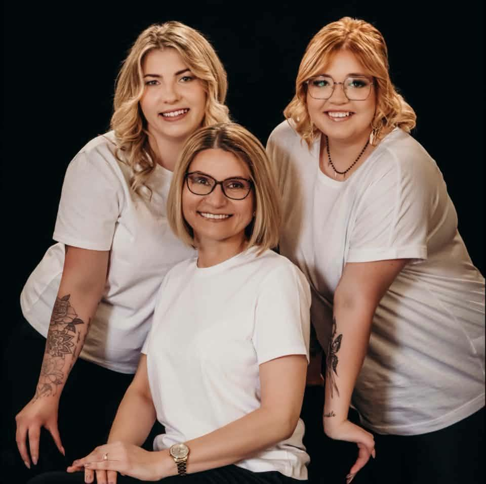
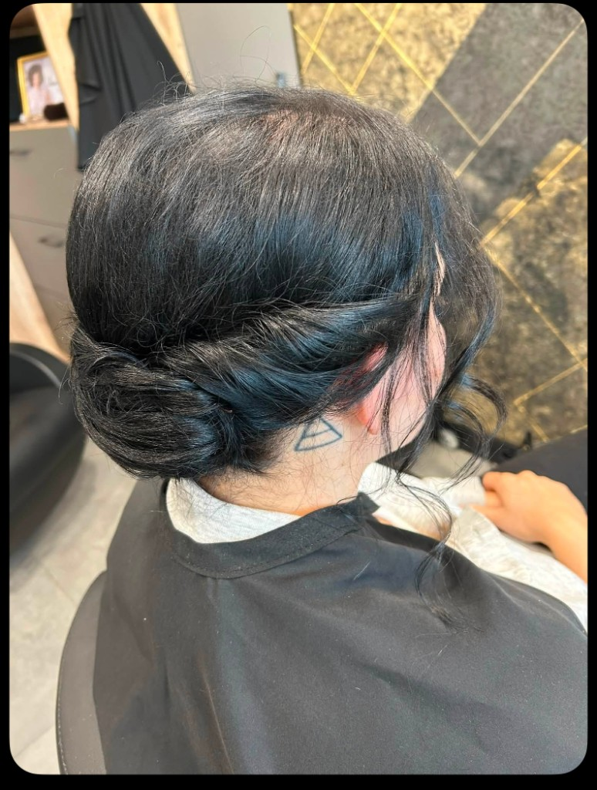

W salonie
Wizyta przy Poniatowskiego 16
Przyjmuję stacjonarnie w Rudzie Śląskiej. To zwykły, lokalny salon: można wpaść, usiąść i zostawić resztę dnia za drzwiami.
Ruda Śląska · Poniatowskiego 16
Nasz zespół fryzjerek. Od ponad dwudziestu lat strzyżemy, czeszemy i słuchamy ludzi, którzy siadają w naszym fotelu.


O nas
Nazywam się Anna Ząbczyńska. Fryzjerstwem zajmuję się od ponad dwudziestu lat. W tym czasie nauczyłam się słuchać: czego ktoś naprawdę potrzebuje, czego się obawia i jak chce się poczuć, gdy wyjdzie z salonu.
Regularnie jeżdżę na szkolenia branżowe. Włosy, produkty i ręce trzeba trzymać w ruchu. Chcę, żeby osoba, która do mnie przychodzi, mogła z tego skorzystać od razu, bez wielkich słów o trendach.
„jesteś niesamowita”
Dla kogo jeszcze
Niedawno nawiązałam współpracę z placówką, dzięki której mogę świadczyć usługi fryzjerskie osobom starszym i z niepełnosprawnością.
Zależy mi, żeby każda taka wizyta była spokojna i pełna szacunku: umyte włosy, zwykła rozmowa i poczucie, że ktoś ma na Ciebie czas.
Usługi
Zakres, wolne terminy i ceny najłatwiej ustalić w rozmowie. Opowiedz, czego potrzebujesz. Dobierzemy rozwiązanie bez pośpiechu.
W salonie
Przyjmuję stacjonarnie w Rudzie Śląskiej. To zwykły, lokalny salon: można wpaść, usiąść i zostawić resztę dnia za drzwiami.
Z dojazdem
Jeśli dojazd do salonu jest trudny albo wygodniej spotkać się w domu, przyjeżdżam do klienta. Przywożę ze sobą to, czego potrzeba do pracy. Ty zostajesz u siebie.
Po szczegóły usług i aktualne ceny zadzwoń pod 885 054 894 albo napisz na Facebooku.
Prace
Kontakt
Ceny, dostępność i dojazd najszybciej ustalimy telefonicznie albo przez Facebooka. Jeśli wolisz wpaść osobiście, salon znajdziesz przy ulicy Poniatowskiego w Rudzie Śląskiej.
Adres
ul. Poniatowskiego 16
41-706 Ruda Śląska
Telefon +48 885 054 894
Facebook Salon Fryzjerski Złoty Lok